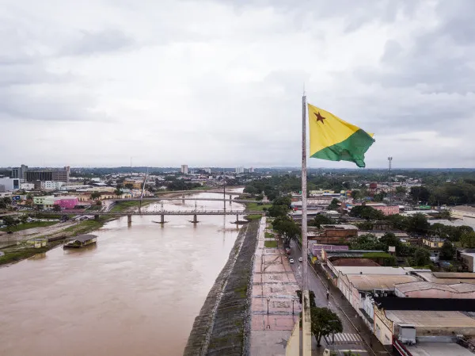

Rio Branco é a capital do estado do Acre. A cidade está localizada na porção norte do país, sendo geograficamente caracterizada por elementos naturais
como o relevo plano, o clima Equatorial e a vegetação amazônica. Historicamente, foi fundada por meio da ocupação do território do Acre, principalmente
em razão do desenvolvimento da produção de borracha no estado. A cidade recebeu muitos imigrantes nordestinos, além de contar com
uma grande população indígena, sendo a maior cidade em termos populacionais do Acre.
Curiosidade Rio Branco
A região da cidade de Rio Branco, assim como todo o estado do Acre, era habitada por índios nativos que sobreviviam de atividades como a caça e a pesca.
A partir do processo de ocupação da fronteira oeste do território brasileiro, mais especificamente por meio da imigração de nordestinos,
um pequeno povoado foi consolidado na área da atual cidade de Rio Branco. O motor para o processo de desenvolvimento da cidade foi a extração do látex,
por meio da exploração de seringueiras, árvores típicas das formações florestais equatoriais do estado.
Bela foto da cidade de Rio Branco:
